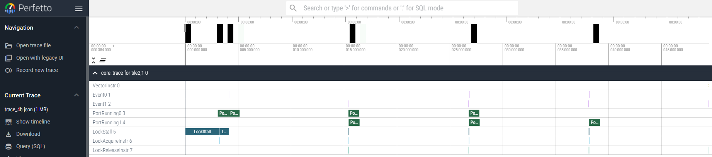

Section 4b - Trace¶
- Section 4 - Performance Measurement & Vector Programming
- Section 4a - Timers
- Section 4b - Trace
- Section 4c - Kernel Vectorization and Optimization
In the previous section-4a, we looked at how timers can be used to get an overview of application performance. However, for kernel programmers that want to optimize the AIE hardware to its fullest potential, being able to see how efficiently the AIE cores and data movers are running is important. As such, the AIEs are equipped with tracing hardware that provides a cycle accurate view of hardware events. More detailed specification of the AIE2 trace unit can be found at in AM020.
Enabling trace support can be done with the following steps:
Steps to Enable Trace Support¶
- Enable and configure trace
- Configure host code to read trace data and write it to a text file
- Parse text file to generate a waveform json file
- Open json file in a visualization tool like Perfetto
- Additional Debug Hints
1. Enable and configure AIE trace¶
Enabling tracing means configuring the trace units for a given tile and then routing the generated event packets through the stream switches to the shim DMA where we can write them to a buffer in DDR for post-runtime processing. For IRON, we abstract these steps into a single runtime function enable_trace within the larger runtime sequence as shown below:
rt = Runtime()
with rt.sequence(tensor_ty, scalar_ty, tensor_ty) as (a_in, f_in, c_out):
rt.enable_trace(trace_size, workers=[my_worker])
...
An alternative is to add a trace parameter to the worker declaration:
worker = Worker(
core_body,
fn_args=[of_in.cons(), of_factor.cons(), of_out.prod(), scale],
trace=1,
)
...
rt = Runtime()
with rt.sequence(tensor_ty, scalar_ty, tensor_ty) as (a_in, f_in, c_out):
rt.enable_trace(trace_size)
...
trace=1 to indicate that worker should be traced. And we can omit the workers argument from the enable_trace call in the runtime sequence.
NOTE: The
workersargument in the runtime sequenceenable_tracealways takes precedence over thetrace=1argument of the worker. So if you define both, we will go with the definition of theenable_traceargument.
Configuring the trace unit in each core tile and routing the trace packets to a valid shim tile is then done automatically.
The workers=[...] argument picks the core tiles to trace. To trace mem tiles or shim tiles, pass memtile_events=[...] / shimtile_events=[...] — those event lists apply to the matching tiles in the design without needing to enumerate Workers (the design's mem/shim tiles are implicit in the data movement). Full event vocabularies are listed in the Customizing Trace Behavior subsection below.
Customizing Trace Behavior¶
The trace configuration chooses helpful default settings so you can trace your design with little additional customization. However, if you want more control over some of these configuration, additional arguments are available in enable_trace:
* reuse_output_buffer - by default (False), the trace buffer is a dedicated host buffer appended as the last runtime_sequence argument, so enabling trace does not shift your data arguments' indices. Set to True to instead write trace data into the tail of the last output buffer, saving a host buffer. See below for more details on XRT buffers.
* coretile_events - which 8 events do we use for all coretiles in array. Search under AIEXDialect for CoreEvent for the target device: aie1 · aie2 · aie2p.
* coremem_events - which 8 events do we use for all core mem in array. Search under AIEXDialect for MemEvent for the target device: aie1 · aie2 · aie2p.
* memtile_events - which 8 events do we use for all memtiles in array. Search under AIEXDialect for MemTileEvent for the target device: aie1 · aie2 · aie2p.
* shimtile_events - which 8 events do we use for all shimtiles in array. Search under AIEXDialect for ShimTileEvent for the target device: aie1 · aie2 · aie2p.
```python
...
rt = Runtime()
with rt.sequence(tensor_ty, scalar_ty, tensor_ty) as (a_in, f_in, c_out):
rt.enable_trace(
trace_size = trace_size,
coretile_events = [
trace_utils.CoreEvent.INSTR_EVENT_0,
trace_utils.CoreEvent.INSTR_EVENT_1,
trace_utils.CoreEvent.INSTR_VECTOR,
trace_utils.CoreEvent.MEMORY_STALL,
trace_utils.CoreEvent.STREAM_STALL,
trace_utils.CoreEvent.LOCK_STALL,
trace_utils.CoreEvent.ACTIVE,
trace_utils.CoreEvent.DISABLED]
)
```
Common core-tile trace event IDs¶
The symbolic CoreEvent names above map to raw hardware event IDs. Some commonly used core-tile events:
| Event | Event ID | Decimal |
|---|---|---|
| True | 0x01 |
1 |
| Stream stalls | 0x18 |
24 |
| Lock stall | 0x1A |
26 |
| Core Instruction — Event 0 | 0x21 |
33 |
| Core Instruction — Event 1 | 0x22 |
34 |
| Vector Instructions (VMAC, VADD, VCMP) | 0x25 |
37 |
| Lock acquire requests | 0x2C |
44 |
| Lock release requests | 0x2D |
45 |
| Core Port Running 0 | 0x4B |
75 |
| Core Port Running 1 | 0x4F |
79 |
A more exhaustive list of events for the core tile, core memory, mem tile, and shim tile is in this header file.
PortEvent API¶
Port events monitor activity on stream switch ports. A physical port on the stream switch is identified by three components: the bundle (which interface on the tile, e.g., DMA, North, South), the channel (which channel within that bundle), and the direction (master for input/S2MM, slave for output/MM2S).
The hardware provides 8 port monitor slots (0-7), each configured to watch a specific physical port. The slot number is determined by the suffix of the event name (e.g., PORT_RUNNING_0 uses slot 0).
from aie.utils.trace.events import PortEvent, MemTilePortEvent, ShimTilePortEvent, CoreEvent, MemTileEvent, ShimTileEvent
from aie.dialects.aie import WireBundle
# Core tile port monitoring
PortEvent(CoreEvent.PORT_RUNNING_0, port=WireBundle.DMA, channel=0, master=True)
# Parameters:
# - code: PORT_RUNNING_N, PORT_IDLE_N, PORT_STALLED_N, or PORT_TLAST_N (N=0-7)
# - bundle: WireBundle.DMA, WireBundle.North, WireBundle.South, etc.
# - channel: Channel number within the bundle (e.g., 0 for DMA channel 0)
# - master: Direction - True for input to tile (S2MM), False for output from tile (MM2S)
# Mem tile port monitoring
MemTilePortEvent(MemTileEvent.PORT_RUNNING_0, WireBundle.DMA, channel=0, master=True)
# Shim tile port monitoring
ShimTilePortEvent(ShimTileEvent.PORT_RUNNING_0, WireBundle.South, channel=2, master=True)
Sharing a monitor slot across event types: Multiple event types can share the same slot to observe different conditions on the same port. The event name suffix determines the slot number (PORT_RUNNING_0 and PORT_TLAST_0 both use slot 0). When events share a slot, each event type independently triggers in the trace whenever its condition is met on the monitored port — PORT_RUNNING_0 fires while data is flowing and PORT_TLAST_0 fires on the last beat of a transfer. They must be configured to monitor the same physical port or an error is raised.
2. Configure host code to read trace data and write it to a text file¶
Once the trace units are configured and routed, we want the host code to read the trace data from DDR and write it out to a text file for post-run processing. To give a better sense of how this comes together, this section provides an example design that is again a simplifed version of the Vector Scalar Multiply example.
AIE structural design code (vector_scalar_mul.py)¶
In order to write the DDR data to a text file, we need to know where in DDR the trace data is stored and then read from that location. This starts inside the vector_scalar_mul.py file where the enable_trace function under the hood expands to calls to configure the trace units and program the shimDMA to write to one of XRT inout buffers. It is helpful to have a more in-depth understanding about the XRT buffer objects described in section 3. There we had described that our XRT supports up to 5 inout buffer objects. Common usage patterns include 1 input/ 1 output and 2 input/ 1 output. These patterns then map in the following way where the group_id is listed next to each XRT buffer object, inoutN (group_id).
| inout0 (3) | inout1 (4) |
|---|---|
| input A | output C |
| inout0 (3) | inout1 (4) | inout2 (5) |
|---|---|---|
| input A | input B | output C |
To support trace, we will configure a shim tile to move the trace packet data to DDR through an XRT buffer object. By default, trace lowering appends a dedicated trace buffer as the next inout buffer after your design's data buffers, so it lands right after the last data argument and your existing buffer indices are unchanged:
| inout0 (3) | inout1 (4) | inout2 (5) |
|---|---|---|
| input A | output C | trace |
| inout0 (3) | inout1 (4) | inout2 (5) | inout3 (6) |
|---|---|---|---|
| input A | input B | output C | trace |
In some designs, we have also used a pattern where the trace data is written to the same buffer object as the output by setting reuse_output_buffer=True. This is helpful if we do not have a spare buffer object dedicated to trace, but requires precise declaration of offset size. See Conv2d example.
| inout0 (3) | inout1 (4) | inout2 (5) |
|---|---|---|
| input A | input B | (output C + trace) |
With the default (dedicated) mode, we can leave the parameters for enable_trace() / start_trace() to their defaults other than trace_size. Setting reuse_output_buffer=True instead writes trace data after the last output tensor, reusing that argument's buffer with a byte offset equal to the tensor size.
Once the design is configured to a XRT buffer object, we turn our attention to the host code to read the DDR data and write it to a file.
NOTE In our example design, we provide a Makefile target
runfor standard build andtracefor trace-enabled build. The trace-enabled build passes the trace buffer size as an argument which is used under the hood to conditionally enable tracing as long astrace_sizeis > 0. This is also true for the Vector Scalar Multiply example.
(2a) C/C++ Host code (test.cpp, ../../../runtime_lib/test_lib/xrt_test_wrapper.h)¶
The main changes needed for the host code is declare a buffer object for trace data and pass that buffer object to the XRT kernel function call. This looks like the following snippets of code:
auto bo_trace = xrt::bo(device, tmp_trace_size, XRT_BO_FLAGS_HOST_ONLY,
kernel.group_id(7));
...
char *bufTrace = bo_trace.map<char *>();
memset(bufTrace, 0, myargs.trace_size);
bo_trace.sync(XCL_BO_SYNC_BO_TO_DEVICE);
...
auto run = kernel(opcode, bo_instr, instr_v.size(), bo_in1, bo_in2, bo_out, 0, bo_trace);
bo_trace.sync(XCL_BO_SYNC_BO_FROM_DEVICE);
write_out_trace to write the buffer contents to a file for post-processing.
Templated host code (test.cpp)¶
Because the code patterns for measuring host code timing and configuring trace are so often repeated, they have been further wrapped into the convenience function setup_and_run_aie in xrt_test_wrapper.h which then allows us to create a simpler top level host code test.cpp.
In our template host code test.cpp for 2 inputs and 1 output, we customize the following: * Input and output buffer size (in bytes) - Specified in the Makefile and CMakeLists.txt and then passed into the vector_scalar_mul.py and test.cpp
in1_size = 16384 # in bytes
in2_size = 4 # in bytes, should always be 4 (1x int32)
out_size = 16384 # in bytes, should always be equal to in1_size
In [vector_scalar_mul.py](./vector_scalar_mul.py):
```Python
in1_dtype = np.int32
in2_dtype = np.int32
out_dtype = np.int32
```
In [test.cpp](./test.cpp)
```C
using DATATYPE_IN1 = std::int32_t;
using DATATYPE_IN2 = std::int32_t;
using DATATYPE_OUT = std::int32_t;
```
-
Buffer initialization functions, Verificiation function - Defined in test.cpp and passed into
setup_and_run_aieas shown below:C // Initialize Input buffer 1 void initialize_bufIn1(DATATYPE_IN1 *bufIn1, int SIZE) { for (int i = 0; i < SIZE; i++) bufIn1[i] = i + 1; } // Initialize Input buffer 2 void initialize_bufIn2(DATATYPE_IN2 *bufIn2, int SIZE) { bufIn2[0] = 3; // scaleFactor } // Initialize Output buffer void initialize_bufOut(DATATYPE_OUT *bufOut, int SIZE) { memset(bufOut, 0, SIZE); } // Functional correctness verifyer int verify_vector_scalar_mul(DATATYPE_IN1 *bufIn1, DATATYPE_IN2 *bufIn2, DATATYPE_OUT *bufOut, int SIZE, int verbosity) { int errors = 0; for (int i = 0; i < SIZE; i++) { int32_t ref = bufIn1[i] * bufIn2[0]; int32_t test = bufOut[i]; if (test != ref) { if (verbosity >= 1) std::cout << "Error in output " << test << " != " << ref << std::endl; errors++; } else { if (verbosity >= 1) std::cout << "Correct output " << test << " == " << ref << std::endl; } } return errors; } -
Setup and run program - The function wrapper
setup_and_run_aiethen sets up the device and XRT buffers and runs the program as defined within ../../../runtime_lib/test_lib/xrt_test_wrapper.h. Here, we see thatsetup_and_run_aiealso handles the trace configuration, trace buffer setup and synchronization, and writing trace data to an output file.
In the example simplified vector_scalar_mul design, we can build the complete design, including the C/C++ host code test.cpp by running:
(2b) Python Host code (test.py, ../../../python/utils/hostruntime/hostruntime.py)¶
In the Makefile, we also have a trace_py target which calls the python host code test.py instead of the C/C++ host code test.cpp.
test_utils (recommended)¶
The recommended approach is to use test_utils.create_npu_kernel, which creates both a TraceConfig and an NPUKernel from command-line arguments:
import aie.utils.test as test_utils
...
npu_opts = test_utils.create_npu_kernel(opts)
res = DefaultNPURuntime.run_test(npu_opts.npu_kernel, ...)
The relevant CLI arguments (added by aie.utils.hostruntime.argparse.add_runtime_args) are:
- -t / --trace_size: Trace buffer size in bytes. Tracing is enabled when this is > 0.
- --trace-file: Path to write raw trace data (default: trace.txt).
- --ddr-id: DDR buffer index for trace (0-4, or -1 to append after last tensor). Default is 4.
IMPORTANT: The
ddr_idvalue (set via--ddr-id) must match theddr_idparameter in your IRONenable_trace()call, or buffer allocation will be incorrect.
TraceConfig (manual setup)¶
For custom host code, you can create a TraceConfig directly and pass it to NPUKernel:
from aie.utils.trace import TraceConfig
from aie.utils.npukernel import NPUKernel
trace_config = TraceConfig(
trace_size=8192, # Buffer size in bytes
trace_file="trace.txt", # Output file for raw trace data (default)
)
npu_kernel = NPUKernel(
xclbin_path="build/final.xclbin",
insts_path="build/insts.bin",
trace_config=trace_config,
)
Under the hood, the DefaultNPURuntime uses TraceConfig to allocate the trace XRT buffer, synchronize it after execution, and write the trace data to the output file -- similar to the C++ write_out_trace function and setup_and_run_aie wrapper in xrt_test_wrapper.h.
@iron.jit integration¶
For designs using @iron.jit, TraceConfig can travel as a
CompileTime[T]-style argument and be evaluated inside the generator,
so the trace-vs-no-trace decision lives in the design itself instead
of the host:
from aie.utils.trace import TraceConfig
@iron.jit
def passthrough_with_trace(
x: In,
y: Out,
*,
N: CompileTime[int],
trace_config: CompileTime[TraceConfig | None] = None,
):
line_size = N // 4
line_ty = np.ndarray[(line_size,), np.dtype[np.uint8]]
of_in = ObjectFifo(line_ty, name="in")
of_out = ObjectFifo(line_ty, name="out")
pt = kernels.passthrough(tile_size=line_size, dtype=np.uint8)
def core_fn(of_in, of_out, pt):
for _ in range_(4):
elem_in = of_in.acquire(1)
elem_out = of_out.acquire(1)
pt(elem_in, elem_out, line_size)
of_in.release(1)
of_out.release(1)
# Enable per-worker trace instrumentation only when a config is bound.
worker = Worker(
core_fn, [of_in.cons(), of_out.prod(), pt],
trace=1 if trace_config else 0,
)
rt = Runtime()
tensor_ty = np.ndarray[(N,), np.dtype[np.uint8]]
with rt.sequence(tensor_ty, tensor_ty) as (a_in, b_out):
if trace_config:
rt.enable_trace(trace_config.trace_size, workers=[worker])
rt.start(worker)
rt.fill(of_in.prod(), a_in)
rt.drain(of_out.cons(), b_out, wait=True)
return Program(iron.get_current_device(), rt).resolve_program()
Two equivalent ways to drive it from the caller:
# No trace — trace_config defaults to None, so trace plumbing is omitted
# from the lowered MLIR entirely (clean cache hit on the same recipe).
passthrough_with_trace(in_t, out_t, N=4096)
# With trace — pass a TraceConfig, then read parsed output back out.
trace_cfg = TraceConfig(trace_size=8192)
passthrough_with_trace(in_t, out_t, N=4096, trace_config=trace_cfg)
trace_cfg.trace_to_json(trace_cfg.physical_mlir_path, "trace.json")
Two side effects of the call worth knowing about:
trace_config.physical_mlir_pathis auto-populated with the per-designinput_with_addresses.mlirpath (under$NPU_CACHE_HOME/<hash>/— see compilation_stages.md §Lowering). Pass it straight intotrace_config.trace_to_json(mlir, "out.json")to parsetrace.txtinto Chrome-tracing JSON without locating the cache dir yourself.aie.utils.trace.utils.print_cycles_summary(json_path)walks the generated JSON and prints per-event cycle counts. Most useful with kernels whose C++ body brackets work withevent0()/event1()(thekernels.*library helpers do) so the summary can pair entry and exit timestamps.
3. Parse text file to generate a waveform json file¶
Once the packet trace text file is generated (trace.txt), we use a python-based trace parser (parse.py) to interpret the trace values and generate a waveform json file for visualization (with Perfetto). This is a step in the Makefile but can be executed from the command line as well.
The --mlir argument should point to input_with_addresses.mlir from the build work directory, not the original source MLIR. This file contains the lowered register writes produced by the trace passes, which the parser uses to map raw trace packets back to named events.
python ../../../python/utils/trace/parse.py \
--input trace.txt \
--mlir build/input_with_addresses.mlir \
--output trace.json
In our example Makefile, we also run get_trace_summary.py to analyze the generated JSON trace file to count the number of invocations of the kernel and the cycle count of those invocations. This depends on the kernel having an event0 and event1 function call at the beginning and end of the kernel, which our example does. event0 and event1 are functions that generate an internal event and is helpful for us to mark the boundaries of a function call.
4. Open json file in a visualization tool like Perfetto¶
Open https://ui.perfetto.dev in your browser and then open up the waveform json file generated in step 3. You can navigate the waveform viewer as you would a standard waveform viewer and can even zoom/pan the waveform with the a,s,w,d keyboard keys.
Additional Debug Hints¶
- If you are not getting valid trace data out (e.g. empty
trace.txtor just 0's), then trace packets were not written to a file successfully. There could be a number of reasons for this but some things to check are:- Did you write to the correct XRT buffer object that your host code is reading from? By default, trace lowering appends a dedicated trace buffer as the last
runtime_sequenceargument, so the host must pass a trace buffer at that trailing index. Withreuse_output_buffer=True, trace data is instead appended into the last output buffer.- If using the Python host (
DefaultNPURuntime/TraceConfig), buffer management is handled automatically. Keepreuse_output_bufferinTraceConfigconsistent with the corresponding argument in your IRONenable_trace()/start_trace()call. - If using a C/C++ host with
reuse_output_buffer=True, trace data is appended to the lastruntime_sequenceargument's buffer at an offset equal to the output size. Allocate that buffer large enough for both output and trace data, and do not create a separate trace buffer.
- If using the Python host (
- It's possible that a simple core may have too few events to create a valid trace packet. For dialect-level designs, you can work around this by adding a ShimTile to the
tiles_to_tracearray inconfigure_trace()to generate additional trace data. - Check that the correct tile is being routed to the correct shim DMA. Using the declarative trace API handles this automatically.
- You may get an invalid tile error if the
colshiftdoesn't match the actually starting column of the design. This should automatically be set by theparse.pyscript but can also be specified manually. Phoenix (npu) devices should havecolshift=1while Strix (npu2) should havecolshift=0when allocated to an unused NPU. - For designs with packet-routing flows, check for correctly matching packet flow IDs. The packet flow ID must match the configured ID value in Trace Control 1 register or else the packets don't get routed. Using the declarative trace API handles this automatically.
- Did you write to the correct XRT buffer object that your host code is reading from? By default, trace lowering appends a dedicated trace buffer as the last
Exercises¶
-
Let's give tracing a try. In this directory, we will be examining a simplified version of the
vector scalar multiplyexample. Runmake trace. This compiles the design, generates a trace data file, and runsparse.pyto generate thetrace_4b.jsonwaveform file.Open this waveform json in http://ui.perfetto.dev. If you zoom into the region of interest with the keyboard shortcut keys W and S to zoom in and out respectively and A and D to pan left and right. You should see a wave like the following:

Based on this wave, You can mouse over each chunk of continguous data for
PortRunning0(input dma port) andPortRunning1(output dma port). What is the chunk size?How many input and output chunks are there?Show answer
1024This should match iteration loop bounds in our example design.Show answer
4 inputs and 4 outputs (last output might be truncated in viewer)There are a few common events in our waveform that are described below: *
INSTR_EVENT_0- The event marking the beginning of our kernel. See vector_scalar_mul.cc where we added the functionevent0()before the loop. This is generally a handy thing to do to attach an event to the beginning of our kernel. *INSTR_EVENT_1- The event marking the end of our kernel. See vector_scalar_mul.cc where we added the functionevent1()after the loop. Much like event0, attaching event1 to the end of our kernel is also helpful. *INSTR_VECTOR- Vector instructions like vector MAC or vector load/store. Here, we are running a scalar implementation so there are no vector events. *PORT_RUNNING_0up toPORT_RUNNING_7- You can listen for a variety of events, such asPORT_RUNNING,PORT_IDLEorPORT_STALLEDon up to 8 ports. To select which port to listen to, use thePortEventPython class. See PortEvent API for the fullPortEventAPI and examples. *PORT_RUNNING_1- Mapped to Port 1 which is configured to the MM2S0 output (DMA from local memory to stream) in this example. This is usually the first output based on routing algorithm. *LOCK_STALL- Any locks stalls. *INSTR_LOCK_ACQUIRE_REQ- Any lock acquire requests. *INSTR_LOCK_RELEASE_REQ- Any lock release requests.We will look at more exercises with Trace and performance measurement in the next section.